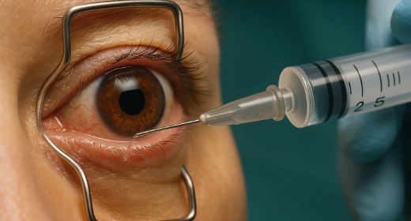

حقنة سريعة ومضبوطة بعناية توصل الدواء إلى داخل العين لعلاج التورّم والأوعية الدموية غير الطبيعية في الشبكية.

موضع الحقن يصل الدواء إلى الهلام داخل العينحقن العين داخل الجسم الزجاجي تضع الدواء مباشرةً في الجسم الزجاجي، وهو الهلام الشفاف الذي يملأ داخل العين.
يصل الدواء إلى الشبكية في مؤخرة العين، فيقلّل التورّم ويمنع نمو الأوعية الدموية غير الطبيعية أو تسرّبها، ولا تستطيع القطرات أو الأقراص الوصول إلى هذه المنطقة بالطريقة نفسها.
تُعطى الحقن عادةً على شكل دورة علاجية، غالباً شهرياً في البداية ثم تتباعد مع استجابة العين.
لمحة سريعة
تعالج الحقن أمراض الشبكية التي تسبّب غالباً هذه الأعراض:
تصبح القراءة والتعرّف على الوجوه أصعب.
تبدو الخطوط المستقيمة متموّجة أو منحنية.
تتجمّع السوائل في مركز الشبكية.
منطقة فارغة أو داكنة في وسط الرؤية.
النظارة الجديدة لا تساعد.
تبدو الألوان باهتة.
يُنصح بالحقن عندما تُظهر الصور وجود سوائل أو تورّم أو أوعية دموية غير طبيعية في البقعة. والبدء المبكر بالعلاج يمنح أفضل فرصة لحماية رؤيتك.
الانتظام في الحقن هو الأساس. تفويت الجلسات قد يسمح بعودة التورّم وضعف الرؤية، لذا التزم بجدولك.
تُستخدم الحقن عادةً لعلاج
تُعطى كل حقنة مع تنظيف صارم وأدوات معقّمة.
تُستخدم إبرة دقيقة جداً ويستغرق الإجراء ثواني.
تحدّد صور الشبكية موعد حقنتك التالية.
يُعطي الحقن طبيب عيون ذو خبرة.
نفحص نظرك ونصوّر الشبكية لتخطيط العلاج.
تُستخدم قطرات مخدّرة وتُنظّف العين بمطهّر.
يُبقي مشبك صغير العين مفتوحة ويُحقن الدواء في ثوانٍ.
نقيس ضغط عينك ثم تعود إلى منزلك في اليوم نفسه.
قد تشعر بحبيبات في العين وتكون الرؤية ضبابية، وقد تظهر بقعة حمراء صغيرة.
العوائم الناتجة عن الدواء شائعة وتختفي، واستخدم القطرات كما نُصحت.
عادةً بعد 4–8 أسابيع مع تصوير لتحديد الحقن التالية.
تتباعد الفترات بين الحقن مع تحسّن العين.
افعل
تجنّب
لا يشعر معظم المرضى إلا بضغط خفيف، فالعين تُخدَّر مسبقاً والحقن يستغرق ثواني.
يعتمد ذلك على حالتك واستجابة عينك، ويحتاج كثيرون إلى عدة حقن في السنة الأولى.
ازدياد الألم أو الاحمرار أو الحساسية للضوء أو تدهور الرؤية في الأيام التالية يحتاج إلى مراجعة عاجلة.
يُرجى ترتيب من يوصلك، فقد تكون رؤيتك ضبابية لبضع ساعات.
سيصوّر طبيبنا شبكيتك ويوضّح لك إن كانت الحقن مناسبة لحالتك.
من الأحد إلى الجمعة · 9 ص – 1 م، 4 م – 9 م